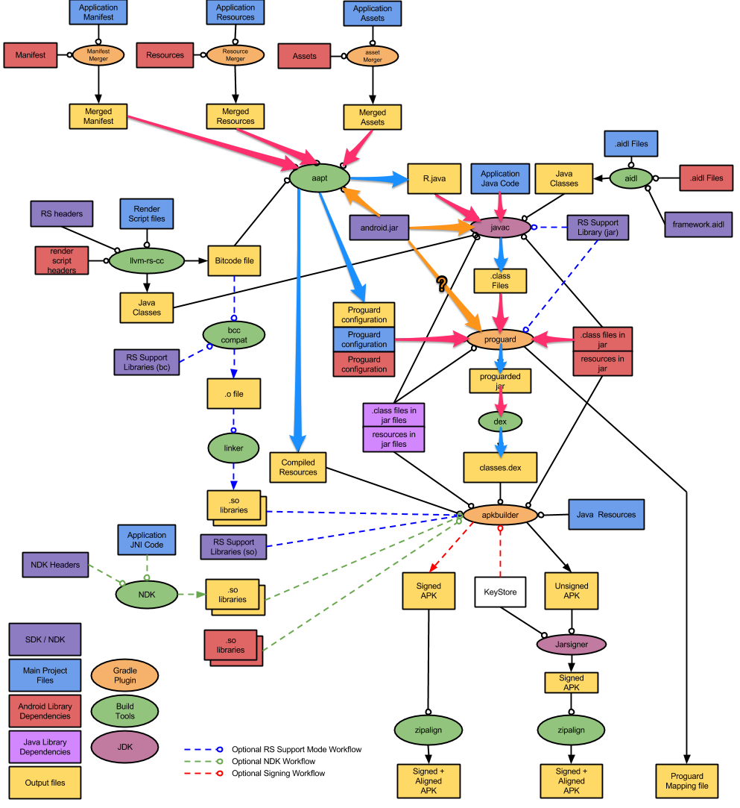

携程Android App插件化和动态加载实践
来源:infoQ
编者按：本文为携程无线基础团队投稿，介绍它们已经开源的Android动态加载解决方案DynamicAPK，本文作者之一，携程无线研发总监陈浩然将会在ArchSummit北京2015架构师大会上分享架构优化相关内容，欢迎关注。
携程Android App的插件化和动态加载框架已上线半年，经历了初期的探索和持续的打磨优化，新框架和工程配置经受住了生产实践的考验。本文将详细介绍Android平台插件式开发和动态加载技术的原理和实现细节，回顾携程Android App的架构演化过程，期望我们的经验能帮助到更多的Android工程师。
需求驱动
2014年，随着业务发展需要和携程无线部门的拆分，各业务产品模块归属到各业务BU，原有携程无线App开发团队被分为基础框架、酒店、机票、火车票等多个开发团队，从此携程App的开发和发布进入了一个全新模式。在这种模式下，开发沟通成本大大提高，之前的协作模式难以为继，需要新的开发模式和技术解决需求问题。
另一方面，从技术上来说，携程早在2012年就触到Android平台史上最坑天花板（没有之一）：65535方法数问题。旧方案是把所有第三方库放到第二个dex中，并且利用Facebook当年发现的hack方法扩大点LinearAllocHdr分配空间（5M提升到8M），但随着代码的膨胀，旧方案也逐渐捉襟见肘。拆or不拆，根本不是可考虑问题，继续拆分dex是我们的唯一出路。问题在于：怎么拆才比较聪明？
其次，随着组织架构调整的影响，给我们的App质量控制带来极高的挑战，这种紧张和压力让我们的开发团队心力憔悴。此时除了流着口水羡慕前端同事们的在线更新持续发布能力之外，难道就没有办法解决Native架构这一根本性缺陷了吗？NO！插件化动态加载带来的额外好处就是客户端的热部署能力。
从以上几点根本性需求可以看出，插件化动态加载架构方案会为我们带来多么巨大的收益，除此之外还有诸多好处：
- 编译速度提升
工程被拆分为十来个子工程之后，Android Studio编译流程繁冗的缺点被迅速放大，在Win7机械硬盘开发机上编译时间曾突破1小时，令人发指的龟速编译让开发人员叫苦不迭（当然现在换成Mac+SSD快太多）。
- 启动速度提升
Google提供的MultiDex方案，会在主线程中执行所有dex的解压、dexopt、加载操作，这是一个非常漫长的过程，用户会明显的看到长久的黑屏，更容易造成主线程的ANR，导致首次启动初始化失败。
- A/B Testing
可以独立开发AB版本的模块，而不是将AB版本代码写在同一个模块中。
- 可选模块按需下载
例如用于调试功能的模块可以在需要时进行下载后进行加载，减少App Size
列举了这么多痛点，童鞋们早就心潮澎湃按捺不住了吧？言归正传，开始插件化动态加载架构探索之旅。
原理
关于插件化思想，软件业已经有足够多的用户教育。无论是日常使用的浏览器，还是陪伴程序员无数日夜的Eclipse，甚至连QQ背后，都有插件化技术的支持。我们要在Android上实现插件化，主要需要考虑2个问题：
- 编译期：资源和代码的编译
- 运行时：资源和代码的加载
解决了以上2个关键问题，之后如何实现插件化的具体接口，就变成个人技术喜好或者具体需求场景差异而已。现在我们就针对以上关键问题逐一破解，其中最麻烦的还是资源的编译和加载问题。
Android是如何编译的？
首先来回顾下Android是如何进行编译的。请看下图：

整个流程庞大而复杂，我们主要关注几个重点环节：aapt、javac、proguard、dex。相关环节涉及到的输入输出都在图上重点标粗。
资源的编译
Android的资源编译依赖一个强大的命令行工具：aapt，它位于<SDK>/build-tools/<buildToolsVersion>/aapt，有着众多的命令行参数，其中有几个值得我们特别关注：
- -I add an existing package to base include set
这个参数可以在依赖路径中追加一个已经存在的package。在Android中，资源的编译也需要依赖，最常用的依赖就是SDK自带的android.jar本身。打开android.jar可以看到，其实不是一个普通的jar包，其中不但包含了已有SDK类库class，还包含了SDK自带的已编译资源以及资源索引表resources.arsc文件。在日常的开发中，我们也经常通过@android:color/opaque_red形式来引用SDK自带资源。这一切都来自于编译过程中aapt对android.jar的依赖引用。同理，我们也可以使用这个参数引用一个已存在的apk包作为依赖资源参与编译。
- -G A file to output proguard options into.
资源编译中，对组件的类名、方法引用会导致运行期反射调用，所以这一类符号量是不能在代码混淆阶段被混淆或者被裁减掉的，否则等到运行时会找不到布局文件中引用到的类和方法。-G方法会导出在资源编译过程中发现的必须keep的类和接口，它将作为追加配置文件参与到后期的混淆阶段中。
- -J specify where to output R.java resource constant definitions
在Android中，所有资源会在Java源码层面生成对应的常量ID，这些ID会记录到R.java文件中，参与到之后的代码编译阶段中。在R.java文件中，Android资源在编译过程中会生成所有资源的ID，作为常量统一存放在R类中供其他代码引用。在R类中生成的每一个int型四字节资源ID，实际上都由三个字段组成。第一字节代表了Package，第二字节为分类，三四字节为类内ID。例如：
//android.jar中的资源，其PackageID为0x01
public static final int cancel = 0x01040000;
//用户app中的资源，PackageID总是0x7F
public static final int zip_code = 0x7f090f2e;
我们修改aapt后，是可以给每个子apk中的资源分配不同头字节PackageID，这样就不会再互相冲突。
代码的编译
大家对Java代码的编译应该相当熟悉，只需要注意以下几个问题即可：
classpath:Java源码编译中需要找齐所有依赖项，classpath就是用来指定去哪些目录、文件、jar包中寻找依赖。
混淆:为了安全需要，绝大部分Android工程都会被混淆。混淆的原理和配置可参考Proguard手册。
有了以上背景知识，我们就可以思考并设计插件化动态加载框架的基本原理和主要流程了。
实现
实现分为两类：
1.针对插件子工程做的编译流程改造
2. 运行时动态加载改造（宿主程序动态加载插件，有两个壁垒需要突破：资源如何访问，代码如何访问）。
插件资源编译
针对插件的资源编译，我们需要考虑到以下几点：
- 使用-I参数对宿主的apk进行引用。
据此，插件的资源、xml布局中就可以使用宿主的资源和控件、布局类了。
- 为aapt增加--apk-module参数。
如前所述，资源ID其实有一个PackageID的内部字段。我们为每个插件工程指定独特的PackageID字段，这样根据资源ID就很容易判明，此资源需要从哪个插件apk中去查找并加载了。在后文的资源加载部分会有进一步阐述。
- 为aapt增加--public-R-path参数。
按照对android.jar包中资源使用的常规手段，引用系统资源可使用它的R类的全限定名android.R来引用具体ID，以便和当前项目中的R类区分。插件对于宿主的资源引用，当然也可以使用base.package.name.R来完成。但由于历史原因，各子BU的“插件”代码是从主app中解耦独立出去的，资源引用还是直接使用当前工程的R。如果改为标准模式，则当前大量遗留代码中R都需要酌情改为base.R，工程量大并且容易出错，未来对bu开发人员的使用也有点不够“透明”。因此我们在设计上做了让步，额外增加--public-R-path参数，为aapt指明了base.R的位置，让它在编译期间把base的资源ID定义在插件的R类中完整复制一份，这样插件工程即可和之前一样，完全不用在乎资源来自于宿主或者自身，直接使用即可。当然这样做带来的副作用就是宿主和插件的资源不应有重名，这点我们通过开发规范来约束，相对比较容易理解一些。
插件代码编译
针对插件的代码编译，需要考虑以下几点：
classpath:对于插件的编译来说，除了对android.jar以及自己需要的第三方库进行依赖之外，还需要依赖宿主导出的base.jar类库。同时对宿主的混淆也提出了要求：宿主的所有public/protected都可能被插件依赖，所以这些接口都不允许被混淆。
混淆:插件工程在混淆的时候，当然也要把宿主的混淆后jar包作为参考库导入。
自此，编译期所有重要步骤的技术方案都已经确定，剩下的工作就只是把插件apk导入到先一步生成好的base.apk中并重新进行签名对齐而已。
万事俱备，只欠表演。接下来我们看看在运行时插件们是如何登台亮相的。
运行时资源的加载
平常我们使用资源，都是通过AssetManager类和Resources类来访问的。获取它们的方法位于Context类中。
Context.java
/** Return an AssetManager instance for your application's package. */
public abstract AssetManager getAssets();
/** Return a Resources instance for your application's package. */
public abstract Resources getResources();
它们是两个抽象方法，具体的实现在ContextImpl类中。ContextImpl类中初始化Resources对象后，后续Context各子类包括Activity、Service等组件就都可以通过这两个方法读取资源了。
ContextImpl.java
private final Resources mResources;
@Override
public AssetManager getAssets() {
return getResources().getAssets();
}
@Override
public Resources getResources() {
return mResources;
}
既然我们已经知道一个资源ID应该从哪个apk去读取（前面在编译期我们已经在资源ID第一个字节标记了资源所属的package），那么只要我们重写这两个抽象方法，即可指导应用程序去正确的地方读取资源。
至于读取资源，AssetManager有一个隐藏方法addAssetPath，可以为AssetManager添加资源路径。
/**
* Add an additional set of assets to the asset manager. This can be
* either a directory or ZIP file. Not for use by applications. Returns
* the cookie of the added asset, or 0 on failure.
* {@hide}
*/
public final int addAssetPath(String path) {
synchronized (this) {
int res = addAssetPathNative(path);
makeStringBlocks(mStringBlocks);
return res;
}
}
我们只需反射调用这个方法，然后把插件apk的位置告诉AssetManager类，它就会根据apk内的resources.arsc和已编译资源完成资源加载的任务了。
以上我们已经可以做到加载插件资源了，但使用了一大堆定制类实现。要做到“无缝”体验，还需要一步：使用Instrumentation来接管所有Activity、Service等组件的创建（当然也就包含了它们使用到的Resources类）。
话说Activity、Service等系统组件，都会经由android.app.ActivityThread类在主线程中执行。ActivityThread类有一个成员叫mInstrumentation，它会负责创建Activity等操作，这正是注入我们的修改资源类的最佳时机。通过篡改mInstrumentation为我们自己的InstrumentationHook，每次创建Activity的时候顺手把它的mResources类偷天换日为我们的DelegateResources，以后创建的每个Activity都拥有一个懂得插件、懂得委托的资源加载类啦！
当然，上述替换都会针对Application的Context来操作。
运行时类的加载
类的加载相对比较简单。与Java程序的运行时classpath概念类似，Android的系统默认类加载器PathClassLoader也有一个成员pathList，顾名思义它从本质来说是一个List，运行时会从其间的每一个dex路径中查找需要加载的类。既然是个List，一定就会想到，给它追加一堆dex路径不就得了？实际上，Google官方推出的MultiDex库就是用以上原理实现的。下面代码片段展示了修改pathList路径的细节：
MultiDex.java
private static void install(ClassLoader loader, List<File> additionalClassPathEntries,
File optimizedDirectory)
throws IllegalArgumentException, IllegalAccessException,
NoSuchFieldException, InvocationTargetException, NoSuchMethodException {
/* The patched class loader is expected to be a descendant of
* dalvik.system.BaseDexClassLoader. We modify its
* dalvik.system.DexPathList pathList field to append additional DEX
* file entries.
*/
Field pathListField = findField(loader, "pathList");
Object dexPathList = pathListField.get(loader);
expandFieldArray(dexPathList, "dexElements", makeDexElements(dexPathList,
new ArrayList<File>(additionalClassPathEntries), optimizedDirectory));
}
当然，针对不同Android版本，类加载方式略有不同，可以参考MultiDex源码做具体的区别处理。
至此，之前提出的四个根本性问题，都已经有了具体的解决方案。剩下的就是编码！
编码主要分为三部分：
- 对aapt工具的修改。
- gradle打包脚本的实现。
- 运行时加载代码的实现。
具体实现可以参考我们在GitHub上的开源项目DynamicAPK。
收益与代价
任何事物都有其两面性，尤其像动态加载这种使用了非官方Hack技术的方案，更需要在规划阶段把收益和代价考虑清楚，方便完成后进行复盘。
收益
- 插件化架构适应现有组织架构和开发节奏需求，各BU不但从代码层面，更从项目控制层面做到了高内聚低耦合，极大降低了沟通成本，提高了工作效率。
- 拆分成多个小的插件后，dex从此告别方法数天花板。
- HotFix为app质量做好最后一层保障方案，再也没有无法挽回的损失了，而且现在HotFix的级别粒度可控，即可以是传统class级别（直接使用pathClassLoader实现），也可以是带资源的apk级别。
- ABTesting脱离古老丑陋的if/else实现，多套方案随心挑选按需加载。
- 编译速度大大提高，各BU只需使用宿主的编译成果更新编译自己子工程部分，分分钟搞定。
- App宿主apk大大减小，各业务模块按需后台加载或者延迟懒加载，启动速度优化，告别黑屏和启动ANR。
- 各BU插件apk独立，谁胖谁瘦一目了然，app size控制有的放矢。
以上收益，基本达到甚至超出了项目的预期目标: D
代价
- 资源别名
Android提供了强大的资源别名规则，参考可以获取更多细节描述。但不幸的是，在三星S6等部分机型上使用资源别名会出现宿主资源和插件资源ID错乱导致资源找不到的问题。无奈只能禁止使用这一技术，所幸放弃这个高级特性不会引起根本性损失。
- 重名资源
如前文所述的原因，宿主的资源ID会在插件中完整复制一份。失去了包名这一命名空间的保护，重名资源会直接造成冲突。暂时通过命名规范的方式规避，好在良好的命名习惯也是各开发应该做到的，因此解决代价较小。
- 枚举
很多控件都会使用枚举来约束属性的取值范围。不幸的是Android的枚举居然是用命名来唯一确定R中生成的id常量，毫无命名空间或者所属控件等顾忌。因为上一点同样的原因，宿主和插件内的同名枚举会造成id冲突。暂时同样通过命名规范的方式规避。
- 外部访问资源能力。
对于极少数需要从外部访问apk资源的场合（例如发送延时通知），此时App尚未启动，资源的获取由系统代劳，理所当然无法洞悉内部插件的资源位置和获取方式。对于这种情况实在无能为力，只好特别准许此类资源直接放在宿主apk内。
以上代价，或者无伤大雅，或者替代方案成本非常低，都在可接受范围内。
未来优化
还有一些高级特性，因为优先级关系暂未实现，但随着各业务线的开发需求也被提到优化日程上来，如：
- 插件工程支持so库。
- 插件工程支持lib工程依赖、aar依赖、maven远程依赖等各种高级依赖特性。
- IDE友好，让开发人员可以更方便的生成插件apk。
开源
经过以上介绍，相信各位对携程Android插件化开发和动态加载方案有了初步了解。细节请移步GitHub开源项目DynamicAPK。携程无线基础研发团队未来会继续努力，为大家分享更多项目实践经验。